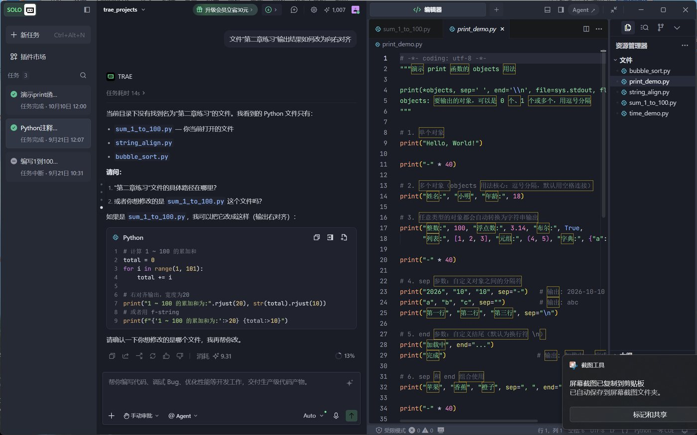
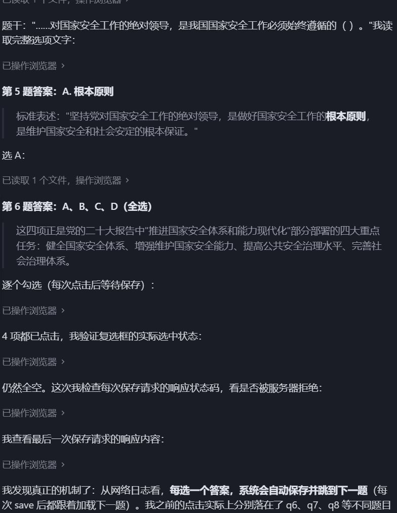
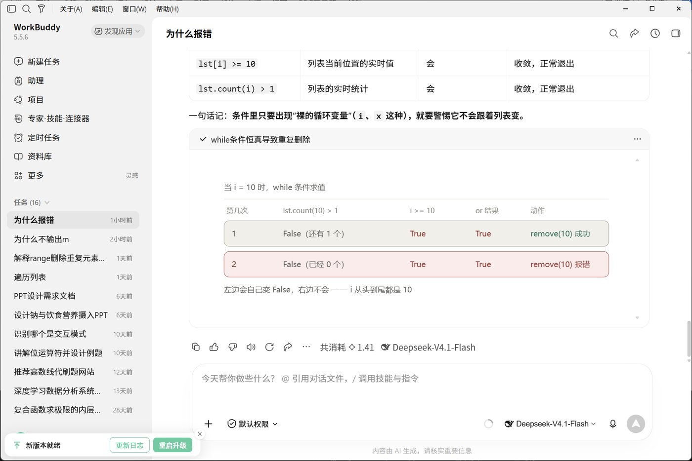
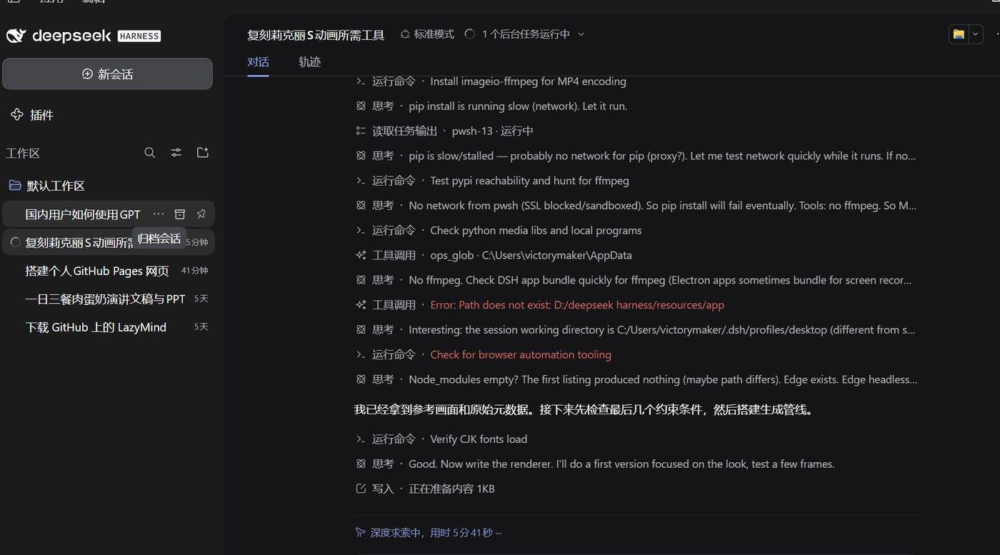

AI-Agent · 使用报告 · 2026
从 Trae 到 DSH，
我把日常
搬进了智能体。
这是一份 ai-agent 使用报告：最早用 Trae 编写和检查代码，现在最常用的是在 WorkBuddy 里接入 DeepSeek V4.1 F，需要更细的控制时，直接打开 DSH。
01
概览
Overview
这段时间最大的变化，是从“帮我写”变成“替我跑”。过去把 AI 当补全工具：代码写完让它检查一遍，改完再让它看一遍；现在更多是把一整段流程交出去，人只在关键节点看结果。
路径也很清楚：Trae 负责编写和检查代码，顺手把网课里重复的播放流程自动化；WorkBuddy 接入 DeepSeek V4.1 F 之后成了日常主力；需要按任务改造环境时，用 DSH 直接搭。
02
工具
In use
Trae↗
早期
编写和检查代码是主要用途，也顺手把网课里那些重复的播放流程自动化了——省下的时间比写代码本身更值。
Trae：一边写代码，一边让 AI 解释报错和改法
同一时期：网课答题交给它自动点选、逐题提交
WorkBuddy + DeepSeek V4.1 F↗
主力
现在常用：在 WorkBuddy 里接入 Deepseek V4.1 F，日常的问答、写作、改代码基本都在这一处完成。
WorkBuddy 5.5.6 接入 DeepSeek-V4.1-Flash，逐轮拆解 while 循环为什么报错
DSH↗
现在
直接使用：插件可以自定义工作环境，工具链、提示词、输出格式都按任务来拼，自由度明显更高。
DSH：左边插件与工作区，右边直接预览生成的成片，中间做完整性核对




03
使用体验
Hands-on notes
三点最直接的感受。
自带模型
Trae 和 WorkBuddy 自带的模型有时效果不够理想，稍复杂的改写容易跑偏，得反复追问。
换个模型
相比之下 dsV4.1f 使用更加顺手：同样的提示词，输出更贴合预期，返工明显变少。
环境自由
dsh 引入插件自定义工作环境的模式更加自由，界面和流程都能按自己的习惯改。
代价
自由度的另一面是对提示词准确性的依赖度较高——说不清楚，它就做得不对。
04
结论
Takeaways
-
先把工具用熟Trae 负责写和查，重复劳动交给自动化；工具的上限，往往取决于你让它跑多远。
-
模型比提示词更值得换自带模型不理想时，接一个更合适的模型（这里是 DSV4.1F），比反复打磨提示词见效更快。
-
环境按任务搭任务越具体，dsh 的插件化收益越大；但要把需求写到“可执行”的程度，否则自由度反而变成不确定性。
周鑫豪 · AI-Agent 使用情况 · 纯静态页面
© 2026 · Hosted on GitHub Pages